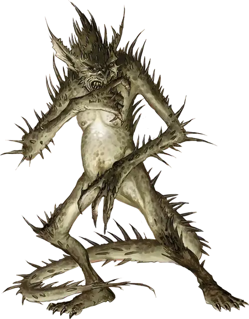

Шипастый дьявол (Гаматула)
Barbed Devil
Среднее Исчадие (Дьявол), законно-злое

Класс Доспеха 15 (природный доспех)
Хиты 110 (13к8 + 52)
Скорость 30 футов
| мод | спас | ||
|---|---|---|---|
| СИЛ | 16 | +3 | +6 |
| ЛОВ | 17 | +3 | +3 |
| ТЕЛ | 18 | +4 | +7 |
| мод | спас | ||
|---|---|---|---|
| ИНТ | 12 | +1 | +1 |
| МДР | 14 | +2 | +5 |
| ХАР | 14 | +2 | +5 |
Навыки Восприятие +8, Обман +5, Проницательность +5
Сопротивление урону холод; дробящий, колющий, рубящий от немагических атак, кроме нанесённых посеребрённым оружием
Иммунитет к урону огонь, яд
Иммунитет к состояниям отравление
Чувства тёмное зрение 120 футов, пассивное Восприятие 18
Языки Инфернальный, Телепатия 120 фт.
Опасность 5 (1800 опыта)
Бонус мастерства +3
Особенности
Шипастая шкура. В начале каждого своего хода шипастый дьявол причиняет колющий урон 5 (1к10) всем схватившим его существам.
Дьявольское зрение. Магическая тьма не мешает тёмному зрению дьявола.
Сопротивление магии. Дьявол совершает с преимуществом спасброски от заклинаний и прочих магических эффектов.
Вариант: Призыв дьявола. У некоторых дьяволов может быть действие, позволяющее им призывать других дьяволов.
Призыв дьявола (1/день). Дьявол выбирает, кого призвать, и пытается это сделать. Шипастый дьявол получает 30% шанс призыва одного шипастого дьявола (Гаматула) [barbed devil].
Призванный дьявол появляется в свободном пространстве в пределах 60 футов от призывателя, и действует как его союзник, не имеющий способности призывать дьяволов. Он помогает в течение 1 минуты или пока призыватель не умрёт или действием его не отпустит.
Действия
Мультиатака. Дьявол совершает три рукопашные атаки: одну хвостом, и две когтями. В качестве альтернативы, он может дважды использовать Метание пламени.
Коготь. Рукопашная атака оружием: +6 к попаданию, досягаемость 5 футов, одна цель. Попадание: Колющий урон 6 (1к6 + 3).
Хвост. Рукопашная атака оружием: +6 к попаданию, досягаемость 5 футов, одна цель. Попадание: Колющий урон 10 (2к6 + 3).
Метание пламени. Дальнобойная атака заклинанием: +5 к попаданию, дистанция 150 футов, одна цель. Попадание: Урон огнём 10 (3к6). Если цель — горючий предмет, который никто не несёт и не носит, она также загорается.
Описание
Существа с необузданными жадностью и желаниями, шипастые дьяволы служат охранниками для более сильных обитателей Девяти Преисподних и их сокровищниц. Светящиеся глаза этого похожего на высокого гуманоида, покрытого острыми колючками, шипами, и крючками, дьявола зорко выискивают предметы или существ, которые можно бы было прибрать к рукам. Эти исчадия готовы к любому шансу вступить в бой, если победа сулит награду.
Шипастые дьяволы известны своей бдительностью, и их трудно застать врасплох, а ещё они относятся к своим обязанностям без скуки и рассеянности. Они используют свои острые когти как оружие и кидают огненные шары в убегающих от них врагов.
См. дополнительно статью: "Бестиарий: Дьяволы"